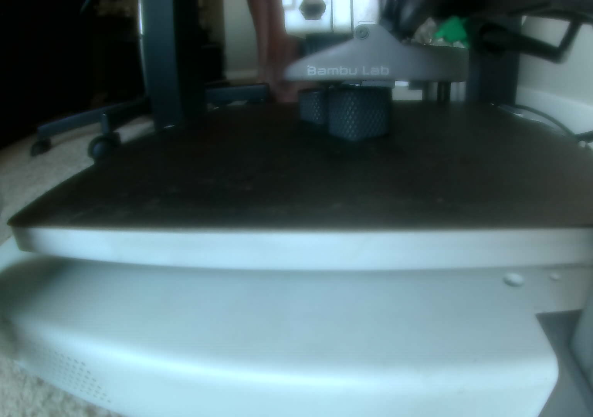

Bambu Lab A1 · Printing

Rugged Cigar Tube _ Case with Airtight TPU Seal
29%
Nozzle
220° / 220°C
Bed
55° / 55°C
Fan
—
Last updated Nov 13, 12:01 PM · Live from the Mac bridge — this page refreshes itself every minute
2
In queue
1
Finished
—
Filament used
Filament — AMS lite
Print log
The Mac bridge — what it unlocks
A small bridge on your Mac speaks the A1's local network language (your Mac and printer share the same Wi-Fi). Once it runs, status fills this page in on its own — no screenshots, no copying numbers out of Bambu Studio.
With the bridge, Muse can
- Read progress, layer, time left, nozzle & bed temps, fan and AMS state live
- Check the chamber camera — stills every second or two, enough to confirm a print looks right
- Ping you when a print finishes, fails, or pauses — including filament runout and tangle alerts the A1 catches itself
- Slice an STL you hand over, show you the settings, and send it after your OK
- Pause or stop a print from chat if something looks wrong
Honest limits on the A1
- Camera is snapshots, not smooth video
- No built-in spaghetti detection like the X1 — failure watching is status + errors + eyeballing stills
- Nothing physical: loading filament, clearing a jam, and pulling a print off the plate stay hands-on
- Only works while your Mac is awake, at home, on the same Wi-Fi
Setup checklist
- On the printer: turn on LAN Only Mode (Settings → General) and note the Access Code shown there — that code is the one setup item Muse needs from you.
- Keep the Mac awake and on the same Wi-Fi as the A1 while printing.
- Say “set up the bridge” in chat — Muse installs it on the Mac, connects with the access code, and this page starts updating itself.
A1 facts on this page: 256 × 256 × 256 mm build volume · AMS lite 4-slot · snapshot chamber camera · no spaghetti detection.